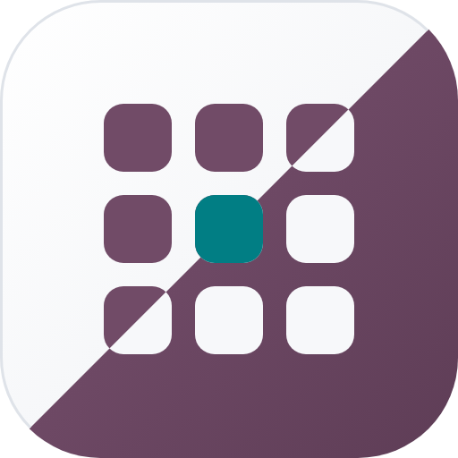
Odoo Mates
Theme Lite
The familiar plum and teal look of Odoo for your Community backend: a home page that lists every app,
a real dark mode, a branded login page and the small things that make daily work faster.
LightDarkApp launcherMenu searchLogin pageApps sidebarOdoo 20 Community
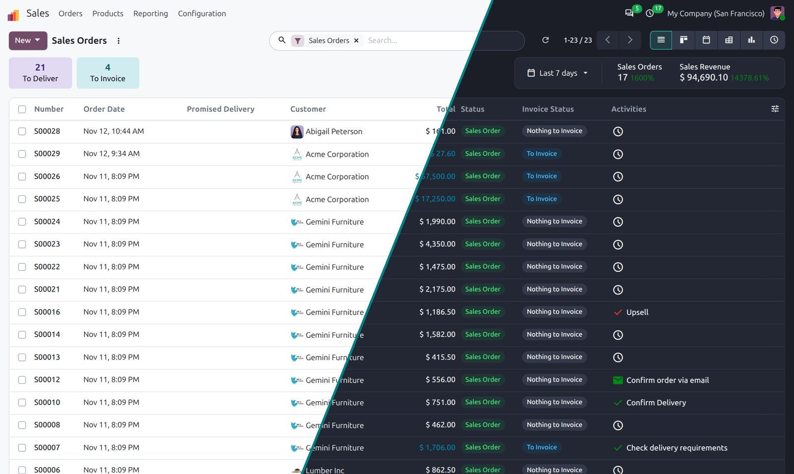
Light and dark
Light, dark, or whatever your device says
Odoo Community ships the dark asset bundle but no dark palette, so nothing ever turns dark. Theme Lite brings the palette and a Dark mode switch in the user menu. Choose System in My Preferences and the backend follows the light or dark setting of your computer or phone, switching by itself at sunset. Every user picks their own.
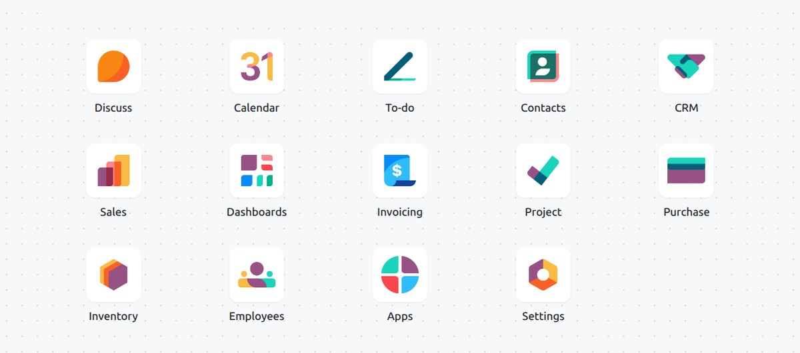
Light: milk-white surfaces, plum and teal accents
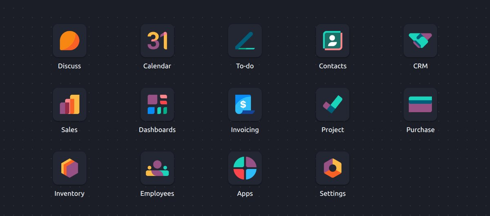
Dark: slate surfaces, lighter plum and teal
Right next to My Preferences
Flip Dark mode in the user menu and the whole backend follows: sheets, lists,
kanban cards, pivot and graph views, dropdowns, scrollbars and form controls.
Buttons keep a readable contrast in both modes.
App launcher
A home page, not another menu
Every app as a tile. Start typing and the launcher searches the menus inside the apps too, best match
first, so sale puts Sales first and still finds Sales Teams in CRM.
✓Type anywhere on the home screen to search; typos are forgiven
✓Matching letters in bold, the best result ready for Enter
✓Arrow keys move through tiles and results, Escape clears
✓Drag tiles into your own order, saved for each user
✓Tiles are links: middle-click opens an app in a new tab
✓A picture of your choice behind the tiles, set per company
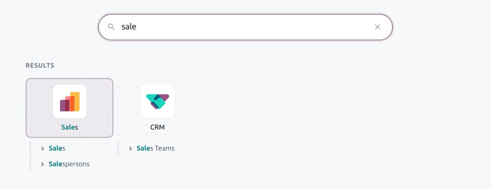
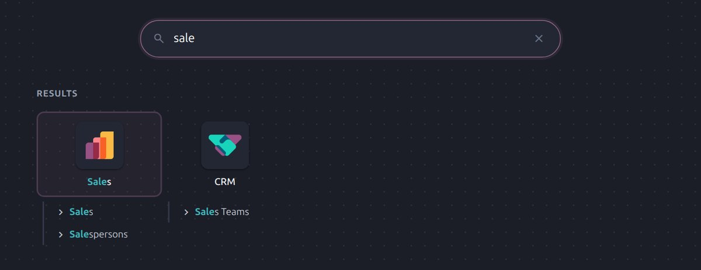
Every view
One calm palette, everywhere
Plum buttons, teal links, white cards on a soft canvas, underlined fields that never draw a box, soft dropdowns and tinted status badges. The theme works through the variables Odoo already exposes, so apps you install later follow too.
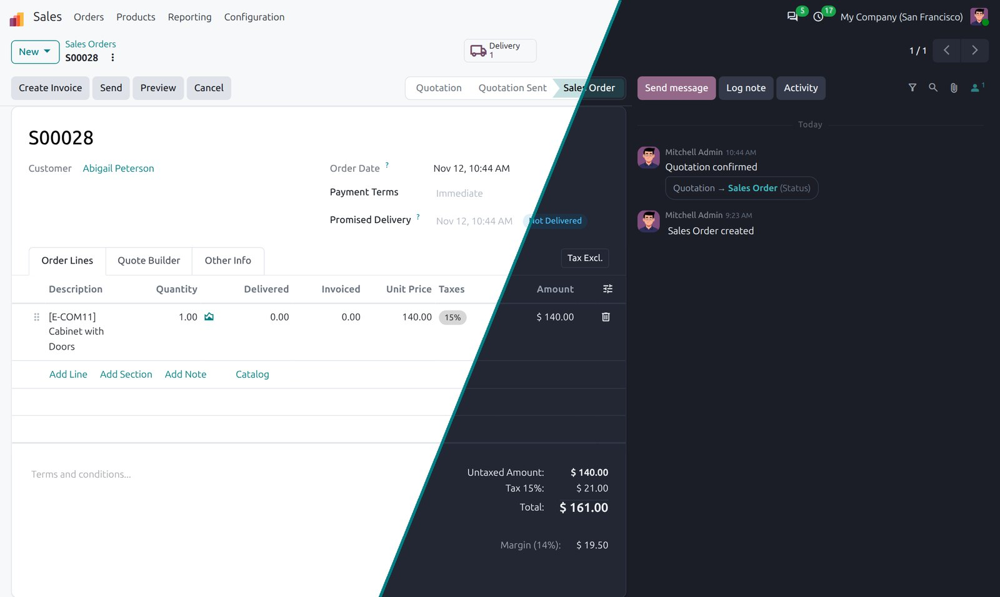
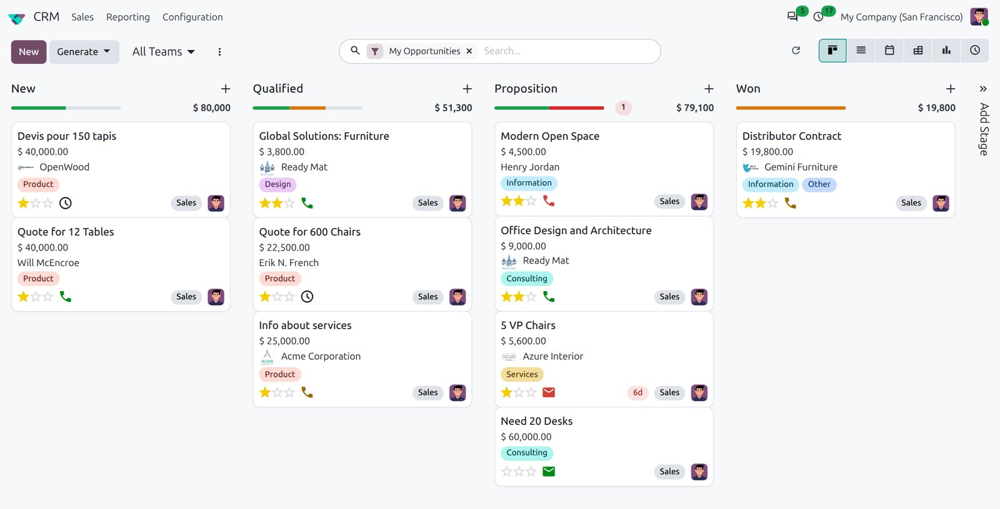
Kanban cards with calmer tag colours
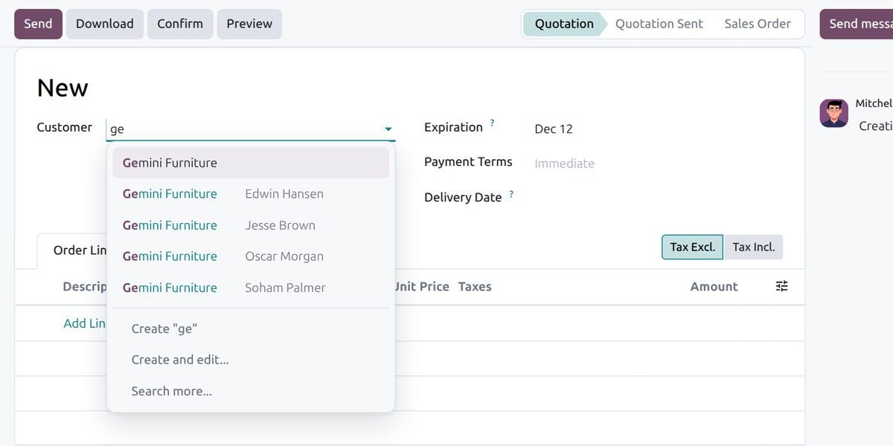
Fields and dropdowns that feel finished
Daily work
Small things you notice every day
A clearer chatter, dialogs that can fill the screen, a refresh button and lists that remember how you set them up.
A chatter you can read at a glance
✓Messages to followers on a light teal card, internal notes on a warm tint
✓Field changes as compact chips, the new value in teal
✓Hide field changes with one click
✓Beside the form or below it, chosen by each user
✓Drag the chatter wider or narrower
And around it
✓Full screen button on every large dialog, or open them full screen by default
✓Refresh button next to the pager: new data, same filters, no page reload
✓Column widths you drag are remembered for each list
✓The totals row of a long list stays in view
✓Bigger buttons and checkboxes on phones; wide pivots scroll sideways
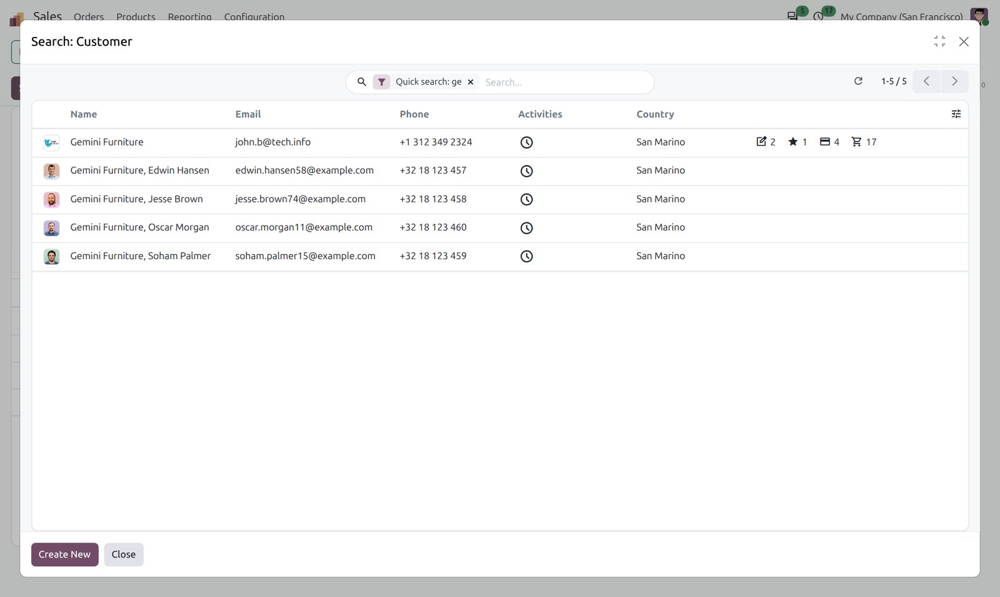
Your brand
Your company, from the first screen
A login page that matches the backend and follows the device in light or dark, your own picture behind the home screen and the login card, and your favicon in the browser tab. Set per company in Settings.
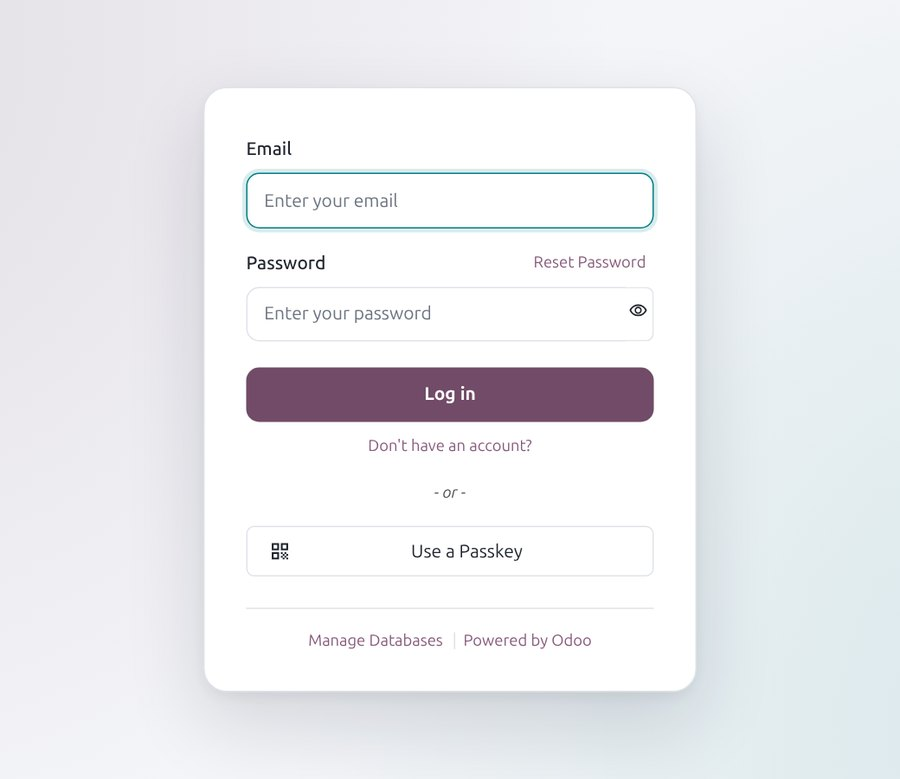
Login page, light
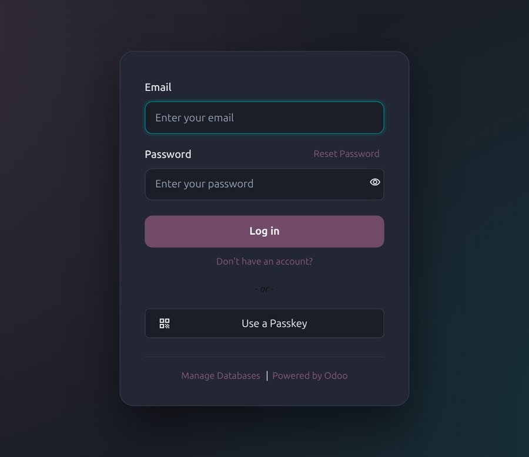
Login page, dark
An apps sidebar, if you want one
Each user can add a slim column of app icons down the left, with or without names, from My Preferences.
It stays out of the way on the home screen and on phones.
The palette
Plum for actions, teal for links, milk white to work on
Teal
links, focus, actions
Milk white
light surfaces
What you get
Everything in the box
App launcher
Every app as a tile, the home page from the moment you install.
Menu search
Best match first, finds menus inside apps, forgives typos.
Dark mode
Light, Dark or System, chosen by each user.
One palette
Plum buttons, teal links, calm cards on every view.
Login page
Matches the backend and follows the device, light or dark.
Your picture
A background and a favicon per company, set in Settings.
Apps sidebar
Optional icons down the left, per user.
Clear chatter
Messages, notes and field changes each with their own look.
Full screen dialogs
A button on every large dialog, or full screen by default.
Refresh button
Reload the records without reloading the page.
Saved columns
Dragged column widths stay where you left them.
Phone friendly
Bigger targets, app menus one tap away, scrolling pivots.
Install it, and it works
The launcher becomes the home page for every user who has not chosen one of their own, and new users land on it
too. Each user tunes the rest in My Preferences: colour scheme, apps sidebar, chatter position and dialog size.
The company picture and favicon live in Settings, under Theme. Uninstall and the home screen goes straight back to
Odoo's.